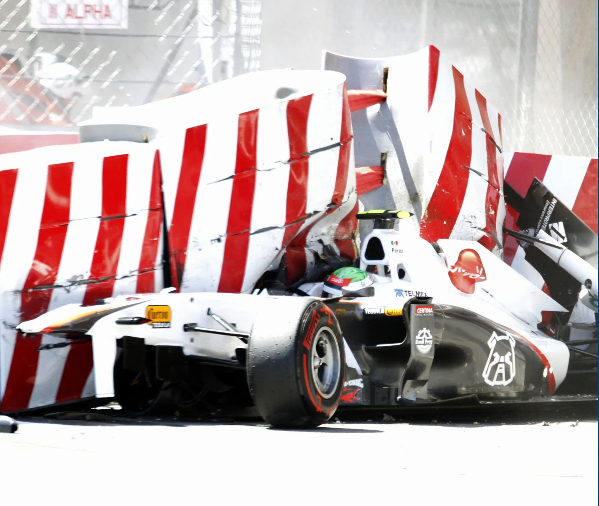

安全なモータースポーツのためのドライバーガイド_英語版_2011
JAF の公式サイトではありません。JAF が公開する PDF を自動変換した非公式の検索用アーカイブです。記載内容は必ず JAF の原本 PDF で出典をご確認ください。
P.1A DRIVER’S GUIDE TO SAFE MOTOR SPORT

PUBLISHED IN PARTNERSHIP WITH THE
P.2A Driver's Guide to Safe Motor Sport
Contents
1 Personal Preparation
2 Personal Equipment Clothing Helmets Frontal Head Restraint (FHR) Ear protection
3 The Working Environment Seats Safety harnesses Window nets Head & shoulder nets Padding Ventilation Supplementary Comfort Emergency switches
4 At an Event
5 If an accident happens What to do – all types of event Specific points concerning accidents on rallies
6 First Aid
7 Further Information Annexe 1 Doping and Motor Sport Annexe 2 Hydration and Diet Annexe 3 Protecting yourself against fire
P.3Introduction
“Because motor sport has become so much safer over recent years, you might think that accidents only happen to other people. Wrong – an accident can happen to anyone. This Guide aims to minimise the risks and help you enjoy your motor sport as safely as possible. It is intended primarily for newcomers to the sport although it is hoped that it will also act as a memory-jogger for the more experienced.”
Professor Sid Watkins President of the FIA Institute for Motor Sport Safety
“The FIA takes great pride in the fact that motor sport has become much less dangerous. The sport evolves, and with it all the mechanical and electronic driver protection devices on the cars have become increasingly more effective. But so much is still down to the individual driver and I therefore associate myself to Professor Sid Watkins in urging you to start your career in motor sport in the best, and safest way possible.”
Jean Todt President FIA
Using this guide
This is a living document. The information presented is a compilation of the latest recognized safety practices and the results of research and testing available at the time of publication. It will be amended from time to time to keep it current. Please check it from time to time. Everyone involved in motor sport shares a responsibility to ensure safety within the sport. It is important to select, install, maintain and use all safety items as prescribed by the manufacturer. Attention to detail is important. Safety is more than obtaining components and knowing the rules – Safety is an attitude. This Guide is published for information and has no regulatory value. However, references to the FIA Regulations are mentioned, in bold italics in the relevant paragraphs and in detail in Annexe 4, for your reference. Many of the basic safety measures suggested do not in fact feature in any regulations but are easy to adopt and strongly recommended. FIA regulations are published on http://www.fia.com – Sport - Regulations and consist of the basic “International Sporting Code” and various specialised Appendices (as well as specific FIA Championship Regulations). They are mandatory in all events for which the FIA International driver’s or competitor’s licence is a condition of entry. Regulations may vary a little for national events - but the importance of your safety doesn’t. FIA approved items of protective equipment are listed in the FIA Technical lists on http://www.fia.com – Sport – Regulations – Technical Lists.
P.41 Personal Preparation Appendix L, Chapter II, Articles 1, 2.3.3, 3 Before you compete at an event, give some thought to your general fitness. A medical examination will be compulsory to obtain your licence anyway, but keeping in above- average shape will benefit performance and personal safety. If you are passed fit but become ill at a later date, you must declare this. Eyesight In a sport where quick reactions are vital, the medical includes eye and colour blindness tests. If you need vision correction, wear shatterproof lenses in all-enveloping non- metallic frames – and use a full face helmet. Contact lenses are acceptable but stop if you have any problem with them during an event. It is important that, before you participate at an event, you notify the Chief Medical Officer or the person in charge of accident rescue response, of contact lens use or any other device or aid that may complicate the efforts of first responders or medical treatment. Use a tinted visor and/or windscreen sunstrip rather than sun glasses. Disability Appendix L, Chapter I, Article 10 & Chapter II, Articles 1.4, 1.5 Physical handicaps may not be a bar to competing in motor sport – your national governing body will be able to advise you. Doping Appendix A, Articles 1, 2, 5, 9, 10, 20, 21 Annexe 1 explains your responsibility with regard to the use, intentional or otherwise, of the “banned substances” which are prohibited as in other sports as well as being potentially particularly dangerous in motor sport. It shows you where to find further information. It's worth remembering that traces of a substance can stay in the body and give positive dope test results days or weeks after absorption.
Medication Exemptions Appendix A, Article 4
If you need any medication, including over the counter remedies, be sure to consult the FIA regulations and check the World Anti Doping Agency (WADA) list of prohibited substances as if the medication includes a substance on this "prohibited list" you cannot take it and participate in any motor sport. This goes for "recreational" drugs too of course. However, if you need to follow a treatment which requires, with no reasonable alternative, the use of a prohibited substance, you must apply for a Therapeutic Use Exemption. Processing this exemption takes time so apply immediately.
If in any doubt – ask a sports doctor rather than risk testing positive at a doping control.
P.5Precautions If necessary, wear an easily identifiable tag with details of your special medical needs. The tag should identify any medical condition or device that could complicate your treatment during rescue or post incident care. This could be vital at the scene of an accident and assist medical personnel with diagnoses. On rallies make sure your driver/navigator is aware of your medical condition – and you know theirs.
The presence of chains, amulets and other jewellery, including those attached through body piercing, may hinder intervention in case you are injured in an accident. Decorative studs through lips and tongues for instance could interfere with some medical procedures, while studs in eyebrows could snag on helmets. So think to remove them before starting an event. Equally importantly, under no circumstances compete while chewing gum – a potential killer if it gets stuck in the windpipe in an accident. It makes sense to remove false teeth too.
It is a good idea to empty the bladder and bowels before driving… nerves may act as natural reminders of this.
If for any reason you are feeling seriously below par, you should consider whether to withdraw from an event because you could be a danger to yourself and other people.
Think about your diet and particularly your fluid intake. As a general rule, eat and drink little and often rather than filling up on calories and liquids just before competing. On long, hot events you will need to guard against dehydration. Annexe 2 contains further suggestions regarding hydration and diet before an event.
P.62 Personal Equipment As a general rule, buy equipment from recognised and reputable suppliers and make sure everything meets the appropriate national or FIA standards. Criteria change so you need to keep up to date on the latest information.
Clothing Appendix L, Chapter III, Article 2; Technical list N°27
Underwear: Don’t skimp on this just because it’s out of sight – it has a key role to play. It is next to your skin so in a fire it is your last line of defence – and it increases your protection against serious burns by up to 50%. Any fabrics other than those developed to provide fire protection (e.g. Nomex) should be avoided because they will transmit the heat to your skin or melt and stick to it. Socks & gloves: these items must be flame resistant too. Gloves in a bright colour, contrasting with the car, will be better noticed by the starter and marshals in case you have to signal problems on the grid or while driving. Drivers' suits: get the best FIA-approved flame-resistant overalls you can afford; it’s your life they are protecting. Keep overalls clean and take care to ensure that washing instructions are followed so that any protective treatments are not washed out. Overalls should not fit you tightly anywhere – a looser fit gives better fire protection and comfort – and always wear your own overalls. Do not rely on borrowed equipment. Footwear: make sure your footwear is fire resistant, the right size and that laces are tied so that they won’t get tangled around the pedals. Keep your footwear clean and dry – overshoes are useful in wet service areas and paddocks. Refer to Annexe 3 for more information on FIA Standard clothing and its use. Special personal clothing: for some events – rallies for instance – it is wise to have a rally jacket and a hat to keep you warm in service areas and in case you stop in a special stage - 30% of all heat lost from the body is lost through your head. Hypothermia won’t help your championship chances. It may be a good idea to have a thermal blanket in the car to protect you against the cold. If you have waterproofs (foul weather gear) to protect against rain, keep in mind that some are more inflammable than others. On other events you may need to guard against sunburn, or heat build-up in the car: adequate ventilation (including through your helmet) and maintaining personal hydration are the principal ways to combat this. If the body's heat rises above 38°C, performance will start to diminish rapidly.
P.7Helmets Appendix L, Chapter III, Article 1; Technical lists N°25, 33 & 41
Take time to try on new helmets, get professional advice and buy the best you can afford. Full face helmets give better protection against fire and facial injury than open ones. For closed cars, open face helmets are tolerated. This is because it may be necessary to remove the helmet inside the car to enable access to an injured driver's airway and helmet removal could be difficult. Size is important: a helmet that does not fit snugly can easily rotate over the front of the head in an accident and come off, reducing the protection it provides to zero. Never wear a helmet that is not your size or that needs any extra padding to make it fit. To check the size, wearing an FIA approved balaclava, position the helmet so that it sits low on your forehead; you should be able to see the edge of the brim at the extreme upper range of your vision. Adjust the retention system so that it will hold the helmet firmly in place then try to remove the helmet without undoing it. If the helmet can shift over your eyes, it is too big; it should be very difficult to move it about in any direction and not possible without movement of your skin. Ask someone to assist you – bend your neck to lower your chin to your chest. With the assistant standing in front of you and the helmet in place with the chin strap properly fitted, the assistant should grasp the bottom edge of the back of the helmet and pull forward. The helmet should not be easily removed with moderate pulling effort. Basically, choose the smallest helmet you can bear, but without any particular pressure points (or voids between head and helmet). Do not borrow someone else’s helmet! Wear the chinstrap as tight as you can without discomfort. With a double D-ring attachment, it’s a good idea to have a tab on the second ring so that it will undo quickly by just pulling. Whenever neck or head injury is suspected, a helmet must only be removed by a properly trained team under medical supervision. Simple proprietary systems exist which are designed to aid in gentle helmet removal in such cases and may be mandated in some championships or series. Currently accepted ones are the pneumatic "Eject" and the Arai and Stand 21 modified balaclavas. Your helmet should bear an indication if you have one of these. Choose a helmet with a good ventilation system and one that will accommodate the appropriate hardware for the approved frontal head retention system you use. Colour selection is also important as darker colours will absorb more heat than lighter colour helmets which can increase your body temperature and affect your performance. The visor is an integral part of the protection against impacts and fire: it should have a positive locking mechanism to prevent opening during an accident.
P.8Don’t forget to peel the protective plastic wrap off a new visor (it happens, even in Formula 1!). The visor – and helmet – should be kept in place during slow-down laps, until you are back in the paddock. Don’t modify or drill holes in your helmet and, if having it decorated, remember that special paints must be used to avoid damaging the structure. Do not remove the lining unless specific instructions are provided for removal by the manufacturer. Avoid stick-on accessories: if really necessary only use those of the helmet’s manufacturer, fixed so that they can be knocked off easily. If you wish to fit a drinking tube, seek instruction from the helmet maker and keep to one, small diameter hole. Don’t mount any communications equipment in or on the helmet or disturb the lining in any way. If a drink tube or earplug radio cable needs routing out of the bottom of the helmet, they may be lightly attached with Velcro to the bottom surface of the comfort padding, but any such lines must come apart immediately when exiting the car or removing the helmet. Appendix J, Article 253, 8.3.5; Technical list N°23 Always protect your helmet when not in use. Pad your roll cage in areas of likely contact so the helmet does not suffer any impact damage, no matter how slight. On rallies, keep helmets well supported and protected in the rally car between stages, preferably in a lined bag. The helmet is probably the piece of equipment most likely to save your life – take care of it and it will take care of you. Don’t drop or knock your helmet and if it suffers any impact, or gets scratched, consider replacing it. At the very least have it inspected by an expert after any impact, even if only against the garage floor. It is a good idea to renew your helmet from time to time, even though it is undamaged. Make sure that the helmet you select is properly labelled and approved for the type of activity in which you will participate and that it is date current.
Frontal Head Restraint (FHR)
Appendix L, Chapter III, Article 3; Technical lists N°29 & 36 One of the most significant advances in driver safety in recent years has been the introduction of the FIA-approved HANS® (Head And Neck Support) and alternative FIA homologated Frontal Head Restraint devices. These are devices worn on the shoulders, outside the overalls and to which the helmet is tethered. They are usually held in place underneath the shoulder belts. An approved device very effectively prevents the neck being stretched and twisted excessively in an impact, dramatically reducing neck loads and the likelihood of spinal injury or of head impacts on the rollbar or cockpit. An FHR greatly reduces the risk of injury to face or neck in a frontal accident and has no disadvantages as long as it is properly installed – some cars may need adjustment to the seat, headrest or shoulder belt anchorages. You are strongly advised to use it for all
P.9events - it is mandatory, with rare exceptions, in all events on the FIA International Calendar. It is however essential to have a helmet approved for FHR use (see FIA Technical list no. 29) and to have the FHR tether anchorages on the helmet installed by your helmet makers or an expert approved by them. If you compete in closed cars, know how to quickly detach the FHR in case it catches on anything in an accident. Note that the use of any device attached to a helmet is prohibited unless FIA approved. There is little evidence that wearing one of the proprietary types of neck brace or cervical collar will help in an accident; some may exacerbate injuries. Refer to: "Guide for the use of HANS® in international motor sport (01.07.2007)" on http://www.fia.com – Sport – Regulations – Drivers' equipment
Ear protection
Noise is an unseen and sometimes overlooked danger in motor sport. Prolonged exposure to high decibel levels can lead to loss of hearing, or tinnitus (ringing in the ears) which in acute form can have disastrous effects on your health. Unlike a broken limb, damaged hearing does not recover so always wear good ear defenders (hearing protection). Use moulded ear plugs if open exhausts are being used. For best results, it is advisable to consult with an audiologist before choosing a device. Apart from engine noise (or the sound of a shouting co-driver), wind noise can also be damaging – another good reason for wearing a properly fitting helmet.
P.103 The Working Environment N.B: Although modifications for comfort or safety with no effect on performance are generally allowed, before making any alteration to a car, it is best to check that the relevant technical regulations - Appendix J - permit it. As a competition driver you will perform better if your car is made as driver-friendly as possible by paying attention to the following areas.
Seats
General: Appendix J Article 253.16; GT: 258.14.4; Sports: 258a.14.4; Production Sports, CN: 259.13.5, 259.14.4; Super Production: 261.6.2; Super 2000: 263.6.2; F3, F/Libre: 275.14.6; Autocross, Rallycross: 279.2.3; Trucks: 290.2.18.4. Tech. lists Nos. 12 & 40. For production-based cars the seat should be FIA homologated. Look for: • Strong tight fitting side support particularly around the hips; • Strong side shoulder support close to the driver; • Strong side and rear headrests Seats that conform to the FIA 8862 Standard fulfil these requirements. Non-production based cars should have an FIA homologated seat or a sturdy, one-piece, properly fitted shell and strong side and rear headrests attached to the cockpit, with FIA standard energy absorbing padding and low friction surfaces. Technical list N°17 When the seat is installed in the car: • The seat back should preferably not be inclined more than 30° from the vertical. • The rear headrest surface should be vertical • The lateral headrests should be as high and as close to the head as is practical for movement and vision. • A seat should only be used with the seat padding supplied by its manufacturer; excessive padding will diminish the protection provided by the seat and seat belts in an accident. • In an accident, the combination of seat and belts will only work if the seat remains attached solidly to the floor – follow the manufacturer’s instructions or enlist the aid of a scrutineer for proper installation of these crucial components, and then check the seat, mounting hardware and floor regularly.
Safety harnesses
General : Appendix J Article 253.6; GT: 258.14.2; Sports: 258a.14.2; Production Sports, CN, F/Libre: 259.14.2; Super-Production: 261.6.3; Super 2000: 263.6.3; F3, F/Libre: 275.14.4; Trucks: 290.2.6– Trucks. Tech. list No. 24.
P.11• Use a 6 point (at least) harness whenever possible. • You cannot push a chain. Belts too only work in one direction. They offer the best protection when they are as short as possible and are fitted to be loaded in a straight line. Always keep your belts tight. • Ensure that the belt anchorage points are installed on the car by a professional according to the latest guidelines from the manufacturer and the FIA. • The lap belt should cross the pelvis not the abdomen: the outer edges should make contact with the bony prominences of the pelvis. The belts should also cross the bony prominence of the hips. • When the shoulder belts are tightened they should not pull the lap belt off the pelvis onto the abdomen. This can usually be avoided by tightening the lap belt first and by making sure that the crotch straps are of the proper length. • It is important to keep the shoulder belt adjusters as low as possible, away from the neck – severe injury is possible if they are badly located. • The harness belts are designed to stretch to absorb the shock. Wear them as tight as possible (whilst still breathing) to avoid excessive forward movement in an impact. Leaving the crotch straps loose for example just increases the jolt when the slack has been taken up instead of absorbing it. It's a good idea to give them a final tightening on the grid if you can, after they have settled in the formation, parade or pace lap. • Belts only fail when previously damaged – check regularly for cuts or abrasions and replace if in any doubt. Problems are caused by bent hardware, incorrect anchoring or poor routing through seats or across seat edges. • Only use harnesses that are FIA homologated and never buy or use second-hand. Don’t let seat belts become scruffy, not least because you could be thrown out of an event by the scrutineers. • Know how to release your belts, remembering that you might well be upside down. • Always renew the harness after an impact. NB : a safety harness system with two straps on each shoulder is homologated by the FIA for use with the HANS® device by drivers which prefer lower shoulder belt attachment points. It is described in: "Guide for the use of HANS® in international motor sport (01.07.2007)" on http://www.fia.com – Sport – Regulations – Drivers' equipment
Window Nets
Appendix J Articles 253.11, 261.6.6, 263.6.6, 279.5.5, or 283.11 Quickly detachable nets for the side windows of closed cars are obligatory in many disciplines and their value in saving hands and arms in a roll cannot be over-emphasised. An indication on the outside of the car of where to detach them is advisable.
P.12Head & shoulder nets
For the inside of closed cars, on both sides of the driver, properly designed and fitted nets are available, intended to limit side head and shoulder movement during impact. Wrapped around the seat back these nets also help support the seat during rear impact. This can be an important addition to any seat to help minimize serious injury and also improve the safety performance of seats that do not conform to the most advanced current FIA Standard 8862.
Padding
General: Appendix J, Article 253 8.3.5. Sports: 258a.14.1.63; F3, F/Libre: 275.13. • Look for any corners and edges in the cockpit where your head, hands and legs might make contact; round them off and/or pad them with appropriate energy absorbing materials – to FIA specification for the head and Confor, Sunmate or similar foam for limbs. • To identify these areas, sit in the car and kick forward and then outward. If there is anything that makes contact with the ankle, shin, or the leg, especially at the knee, it should be padded. If not properly padded it will cause pain and possible injury in a shunt. • Gear change: paddles behind the steering wheel are ideal, but in the case of an exposed shift lever, avoid radii smaller than 25 mm on the top knob and pad the shaft with stiff foam or rubber as described above. • If exposed, the gear shift lever mechanism should be protected by a smooth casing that will prevent the pivot point assembly at the base of the lever from injuring your thigh in a side impact. Use a thick rubber cover over the mechanism which will leave the actual shift lever exposed but will protect the driver from the mechanism. • Pad every tube of the roll cage closer than 50 cm forwards and sideways of the head with stiff foam to FIA specification, Although FIA specification rollbar padding may feel as hard as wood and cannot be compressed with the fingers it is only intended to be hit by the helmeted head in an accident. It has been scientifically developed to combine with the impact reducing properties of your helmet, to allow you to survive the kind of blow which has severely injured or killed drivers in accidents in the past. Common foam rubber will do nothing to help in that situation, even if more comfortable for a light tap on the head. • Pad the steering column and its bracket. • It is advisable to wear knee pads. These pads need to cover the outside of both knees and the inside of one knee. This protects the knees in a side impact and particularly the vulnerable upper part of the knee on the outer side of the leg (which can even suffer in the constricted environment of a single-seater cockpit regardless of accidents), as well as the outer, lower part of the knees. An important nerve passes close to this bone and is vulnerable to being damaged as well. Wearing proper knee pads also helps prevent the insides of the knees from striking and damaging each other. In single-seaters this can also be achieved by putting padding on the inside of the tub and first bulkhead, and by using a seat with padded divider between the knees.
P.13• Ankles can be protected using the same principle with padding inside the socks or padded boots. • Elbow pads are also recommended, particularly in single-seaters where the elbows can be subject to chronic irritation. Another source of irritation is wearing flame resistant overalls without the mandatory long sleeved FIA approved underwear. Not wearing the long sleeve underwear lets the overall fabric rub on the unprotected skin of the elbow. • In all cases select and install padding that will not interfere with the control and operation of the race car.
Ventilation
Scientific studies have shown that physical and mental capacities diminish after the body’s core temperature exceeds 38°C in human beings. If temperatures in your cockpit are likely to be high, arrange for sufficient ventilation to cope with ambient temperature and humidity, giving equal attention to ensuring air can exit as well as enter the cockpit. Sun screens on windows and fitting insulation against the heat from engine and exhaust will help. Above all, ensure your proper hydration during the event as explained in Appendix 2. It should be noted that the same studies indicated that not wearing FIA homologated fire resistant overalls and underwear had little effect in reducing core temperature – although it may be expected to have a considerable effect in raising it in case of fire.
Supplementary comfort
General: Appendix J Article 252.7.3; Gr.N: 254.6.7.3; S2000: 254A.5.7.3; WRC: 255A 5.7.3; GT: 257A.1.4; Rallycross: 279.4.5; Autocross: 279.5.2.10; Trucks: 290.3.21. If you are installing drinking bottles, radio equipment, mobile phones, video cameras or any other objects in the car, bear in mind that they can be lethal if not properly fixed, whether they come loose and lodge under the brake pedal for example, strike you or you strike them in a crash. Fix them to withstand a 40g deceleration and, if hard or sharp, mount them well away from you. Light can dazzle the driver in some situations and can lead to accidents (sun low in the sky or the headlights of following cars). A stripe in the upper part of the windscreen or tape in the rear window can prevent this.
Emergency switches
Gr.N: Appendix J Articles 254.2; Gr.A: 255.5.7.4; GT: 258.3.6.8-9; Sports: 258a.3.6.8- 9; Production Sports: 259.13.6; Super Production: 261.13.2; Autocross, Rallycross: 279.2.4. Ensure that the electrical cut-off and onboard extinguisher switches are within your easy reach (and your co-driver's for rallies) when you are strapped into your seat
P.144 At an Event
Know thoroughly the general and particular rules for your type of event. Obvious? Of course, but not everyone does and anyone who, for example, doesn’t understand flag signals or rally stage signs is a danger to him/herself and to other drivers, so learn the meanings of all signals you will encounter and the rules of the road for race or rally driving. Circuits: Appendix H, Articles 2.4 & 2.9; Autocross, Rallycross: 3.2.3; Rallies: 5.5.4; Cross-country rallies: 6.5; Hillclimbs: 7.2.4. Equally important is to study carefully the supplementary regulations and any official bulletins of each event you drive in, as they may have special instructions about pre-grid and starting procedures, safety car operation, how to go to parc fermé at the finish, etc., all of which contribute to both your safety and your chances of success – “to finish first, first you have to finish”. If in doubt about any regulations ask.
It also makes sense to know the law of the land such as the speed limits for towing trailers and so on. A high visibility offence can bring the sport into disrepute and, on a personal level, make it more difficult for you to find sponsors if you get bad publicity. On the event itself, drive as competitively as possible bearing in mind general safety and, if on a circuit, "do-to–others-as-you-would-be-done-by". If you wish to travel slowly in practice to get a clear lap, or have to at any time, this must be done without hindering or being a danger to other drivers in any way; make sure the mirrors are adjusted so you can see them. Motor sport accidents happen for many reasons but driver errors are the most usual cause, so your life could literally be in your own hands. Above all, always obey officials. Their instructions will often be given for safety reasons and although it’s not a safety issue, be polite to officials. It is not easy to get marshals for some events and the problem won’t be helped if they are shouted at by drivers. N.B. Why not consider marshalling yourself? Not only will you be putting something back into the sport but seeing something of how events are run may actually help you perform better.
If you have to stop or leave the car out on the circuit Appendix L, Chapter IV, Article 3 • Whenever possible, park near a vehicle access point, marked with a large – 1m square – fluorescent orange panel painted on the barrier or other distinctive markings for an exit passage. If on fire, try to stop near a marshal post or extinguisher point marked with a smaller fluorescent orange panel or local variations as may be marked above the barrier. During practice take note of where such points are located. • If you have a choice, never leave your car where a car out of control is likely to end up or in a run-off area.
P.15• Leave the car in neutral (if there is no risk of it rolling) with the steering wheel, and ignition key, if relevant, in place. • Unless local custom dictates otherwise owing to the type of circuit or racing, do not stay in or around the car – get behind a barrier as soon as you safely can. • Do not remove your helmet until you are behind a barrier. • Do not call your team unless you are in a safe place. • Do not cross the track unless instructed to by a marshal. • If you know your car is losing oil, get off the racing line, then the track, as soon as safely possible – don’t try to get back to the pits. If you have to stop on a rally • Do as indicated in Appendix H, Article 5.5.5 General It is advisable to stay with your car until the recovery service arrives and to then accompany the car to the paddock to assist and to avoid further damage.
P.165 If an accident happens
What to do – all types of competition
You’ve prepared properly, you’ve got the right equipment, you’ve studied the regulations – but you can still have an accident. If you see an accident coming… • The less distance there is in which you can accelerate before making contact with parts of the car, the less hard the blow will be when you do. • In a lateral or oblique angle crash, if possible move your head and legs to the impact side (into the headrest or side padding), not away from it. • In a front or rear end crash, position your head on the rear headrest and, if you are wearing one, let your frontal head restraint device do its work. • Leave your hands on the steering wheel but with the thumbs out of it. • Do not try to resist the impact with muscle tension. On a circuit after an accident the marshals will immediately signal following drivers to slow down, in order to avoid you and allow them to come to your aid in safety. They will report the gravity of the situation to race control. Normally, within seconds, there will be marshals arriving to help. You must cooperate with the marshals. Appendix H, Article 2.5.2, Appendix L, Chapter IV, Article 3 (circuits) If the car is in a dangerous position, a practice session will be stopped and a race will be stopped, suspended or neutralised with a safety car (which can take some time), to reduce the hazard. Expert medical and rescue crews will be sent if you are injured or trapped; the marshals themselves will start fighting a fire. If the marshals take your arm or give you instructions this is because they know you may be concussed or in shock and in potential danger – allow them to get you to safety as directly as possible and don’t cross the track without their guidance. If you do have an accident, is there anything you can do to help the rescue team help you? • Try to stay calm. • Use the cut-off switch to isolate the electricity supply and stop fuel being pumped into a hot engine. • If there is a fire, operate the switch to activate your onboard extinguisher. If exiting from a closed car is difficult you may be able to push out the windscreen or rear window with your feet. • If the car is on the track or road, don’t undo your belts or remove your helmet until you are sure it’s safe to leave or a marshal is there to guide you.
P.17• If the car is on its roof, support yourself before undoing or releasing the seat belts, in order to avoid landing on your head and injuring your neck. • Remember to replace the steering wheel if removed. • It may be worth counting to five before leaping out of the car rather than jumping in front of oncoming traffic while you are still angry or disorientated. • If you are injured and experience difficulty moving, it is best to stay in the car until the rescue crew arrives. Make them understand the problem and wait until a doctor arrives in order to supervise your transport without aggravating an injury. If you are unlucky enough to have a crash, do what the doctor tells you. Even after only a minor accident a doctor may ask you to go back for a check up. Do so. It is for your benefit. Appendix L, Chapter II, Articles 2 and 3
Specific points concerning accidents on rallies: Rallies: Appendix H, Articles 5.5.4, 5.5.5, 5.6.1 • Read the series or championship regulations and the event supplementary regulations carefully, understand the organisers’ safety precautions and be especially aware of the signals and procedures used in case of cars crashing or stopping on international rally stages. You may need to stop and assist a crew requiring help or to inform rally control. • Carry a mobile telephone, with the rally control number. • Check your first aid kit and make sure that its contents are suitable for rally needs. • Know where the radio points are on a stage. If you retire or crash, you should stay near the car in a safe place; however if leaving it is unavoidable, be sure that you know exactly where you are, and what you are letting yourself in for if you choose to do this – it is easier to find two people near a car than to look for one wandering through a forest.
P.186 First aid It is worth having some basic first aid training. On some rallies you may be the first on the scene at an accident; if you were the first person to arrive and you didn’t know what to do, think how you’d feel. At other times it may help you understand what rescue personnel are doing for you. A variety of national and international organisations offer first aid and resuscitation training at minimal expense. It could save a life.
7 Further Information Read the bulletins from your licensing/sanctioning body, the ASN and FIA website to keep up with safety developments and find out about videos and publications on competitor safety, marshalling, rescue and First Aid. Do not ignore event supplementary regulations.
P.19ANNEXE 1
Anti-doping in Motor Sport
You may think ‘I have no interest in doping, so I don’t have to care about it’, but you do, you must care, because there are many substances in everyday products that can contravene the rules and could end up as a positive result further to a doping test. These are the points you MUST bear in mind: You are responsible for any substance that enters your body, regardless of whether or not the substance has been taken or administered intentionally. The use of alcohol and cannabis is prohibited: both modify the driver’s behaviour and the latter can remain detectable several weeks after consumption. Be careful: nutritional supplements do not always mention all the substances they contain. Tell your doctor as well as any pharmacist that you are an athlete. o If you get sick and then you need to use a medicine which is normally prohibited (because no permitted medicine can be used instead), you must fill in with your doctor a Therapeutic Use Exemption request and send it to your National Anti-Doping Organisation (or directly to the FIA in certain cases specified in the regulations) for approval. o The content of a specific drug can vary from one country to another, so try to bring with you any drugs you need to use while you are abroad. o Even apparently benign drugs such as eye drops, nose drops or throat pastilles can contain prohibited substances. So avoid or at least strongly limit any self-medication. And always make sure that you know what you are taking.
For additional information, please visit the FIA anti-doping webpage:
www.fia.com/en-GB/sport/anti-doping
On that webpage – and on the anti-doping webpage of many National Sporting Authorities (ASNs), you will also be able to connect to the FIA Race True e-learning course and quiz, available in English, French, German, Spanish and Russian (and more languages in the future). Within approximately 30 minutes, it will show you all the key anti-doping points of which you MUST be aware. So make sure you take this course. These 30 minutes could change your life by avoiding possible positive doping results caused by ignorance.
P.20Please also note that the World Anti-Doping Agency (WADA)’s Prohibited List - listing all the substances and methods prohibited in competitive sport - is now also available on the iPhone app store, free of charge: http://itunes.apple.com/us/app/wada-prohibited-list-2011/id408057950?mt=8
Please contact your National Anti-Doping Organisation or your ASN if you have any questions on anti-doping.
P.21ANNEXE 2
Hydration and Diet
Hydration and diet during an event – a communiqué issued by the FIA Medical Commission
The loss of liquid through sweating can reach between 0,5 and 1 litre per hour of driving, depending on the subject and the outside temperature. This loss may lead to a notable reduction in the performances of drivers and greatly jeopardize their safety. It is difficult to make general statements when it comes to hydration since sweat rates and mineral losses are highly individual. The following recommendations were originally intended for F1 drivers taking part in Grand Prix (2 hours of intense physical and mental stress in high temperatures) and should be adapted to the individual and the type of activity concerned.
What to Drink
For races of two hours or less, the loss of mineral salts is negligible; the best drink, as far as studies have shown, is non-aerated water, no serious study has proved the benefit of other liquids. With water, fruit juice may also possibly be drunk, for example fruit juice or tomato juice. It is necessary to drink: before the race, during the race, after the race. Up to 5 litres of liquid may be consumed, in small doses, the day of a race, depending on the climatic conditions, for example:
1 litre in the morning, before the race; 1 or 2 litres during the race; 2 litres after the race. Don't wait until the symptom of thirst appears, it may be too late to avoid dehydration.
P.22General Advice for the Day of the Race
To be ruled out:
Alcohol; Food which is difficult to digest: melon, cucumber, cabbage, onion, spices, rich or fried foods.
To be avoided:
Aerated drinks; Coffee, tea, depending on the sensitiveness of the individual; Large quantities of fruits; Large amounts of confectionery. Bear in mind that:
Frozen foods multiply the risk of bacterial infection unless they have been kept under perfect conditions, which you cannot always be sure of at a circuit or on a rally; It's important to like the taste – otherwise you may not eat as much as you need for your performance and safety.
Recommended:
Non-aerated water, fruit juice, energy drinks; Sugars absorbed slowly (pasta, rice, bread); Food absorbed quickly and with a high calorific value (dried fruit).
Suggested Menu for the Day of a Race
Breakfast: large; drink as much as desired, in small quantities.
Before the race: a small meal if necessary, e.g. bread, cheese, ham, mixed salad or even pasta, 1 piece of fruit, include a few biscuits. Drinks: consume about 1 litre, in split quantities (2/3 water, max. 1/3 fruit juice), spread over the two hours before the race.
Do not forget to urinate before the race
During the race: it is desirable, depending on the duration of the race, to fit a liquid dispensing device, the quantity of liquid consumed during the race being 1 or 2 litres of water, possibly mixed with low-sugar fruit juice (less than 25 gr. per litre), or an energy drink. After the race: drink plenty of liquid. The addition of a little salt to food will compensate for any loss. A quarter litre of fruit juice replaces the quantity of mineral salts lost in 2 to 3 litres of perspiration, that is to say, the maximum lost during a race. Tomato juice has the same properties.
P.23ANNEXE 3 Protecting yourself against fire
Flame and Heat Resistant Clothing
The FIA Standard 8856-2000 contains the guidelines reprinted below. The FIA’s insistence on wearing complete (full length) underwear and balaclava is a result of long experience, and testing, of the effects of fuel fires. Remember, though, that the protection afforded by a race suit is still very limited. It is possible to suffer burns under an apparently undamaged suit – in this case it is advisable to cool the area with water, but do not remove any clothing adhering to your skin.
Extract from FIA Standard 8856-2000
Protective clothing is not able to protect against all the possible hazards which might be encountered in automobile racing. The clothing specified in this standard has to provide protection against heat and flame whilst having the minimum effect on driver comfort. Users shall ensure that garments are not tight fitting, as this reduces the level of protection, and that they are comfortable to wear under the actual conditions of use. All the clothing recommended in Appendix L (Chapter III, article 2) to the FIA International Sporting Code should be used in order to obtain maximum protection. Wearers are warned of the particular vulnerability of neck, wrists and ankles. The neck, wrists and ankles shall always be covered by at least two articles of protective clothing. Embroidery sewn directly onto the overalls shall be stitched onto the outermost layer only, for better heat insulation. Backing material of badges shall be flameproof and in conformity with the standard ISO 15025 in order to avoid combustion of the badge which would affect the efficiency of the overalls. Thread used for affixing the badge to the overalls shall be flameproof and in conformity with the standard ISO 15025. It is also recommended that embroidery thread on badges or on the outermost layer of the garment be flameproof and in conformity with the standard ISO 15025. When affixing badges and signs to the overalls, heat-bonding shall not be used and the garment shall not be cut. NB: Any embroidery not complying with these conditions will result in the cancellation of the homologation of the overall concerned, and its user may be excluded by the scrutineer of the event during which the infringement was noted.
P.24ANNEXE 4
Index of FIA Regulations and Guides, with Technical Lists of approved products
Published on http://www.fia.com – Sport – Regulations/Technical Lists and in the FIA Yearbook of Automobile Sport and Bulletins
Chapter Subject References
1. Medical exam Appendix L Chap. II Art. 4.
Disability Appendix L Chap. I Art. 10, Chap. II Arts 1.4 & 1.5.
Doping Definition, Tests, Sanctions: Appendix A Arts 1, 2, 5, 9, 10, 20, 21.
Therapeutic Use Exemption: Appendix A Art. 4.
2. Clothing Appendix L Chap. III Art. 2.
Tech. list No. 27.
Helmets Appendix L Chap. III Art. 1.
Tech. lists Nos. 25, 33 & 41.
FHR Appendix L Chap. III Art. 3.
Tech. lists Nos. 29 & 36.
FIA Institute Guide for the Use of HANS® in International Motor sport.
3. Seats General: Appendix J Article 253.16; GT: 258.14.4; Sports: 258a.14.4; Production Sports, CN: 259.13.5, 259.14.4; Super Production: 261.6.2; Super 2000: 263.6.2; F3, F/Libre: 275.14.6; Autocross, Rallycross: 279.2.3; Trucks: 290.2.18.4. Tech. lists Nos. 12 & 40. Safety harness General : Appendix J Article 253.6; GT: 258.14.2; Sports: 258a.14.2; Production Sports, CN, F/Libre: 259.14.2; Super-Production: 261.6.3; Super 2000: 263.6.3; F3, F/Libre: 275.14.4; Trucks: 290.2.6– Trucks. Tech. list No. 24. Window nets Appendix J Articles 253.11, 261.6.6, 263.6.6, 279.5.5, or 283.11.
P.25Padding General: Appendix J, Article 253 8.3.5. Sports: 258a.14.1.63; F3, F/Libre: 275.13. Technical lists Nos. 17 & 23. Supp. comfort General: Appendix J Article 252.7.3; Gr.N: 254.6.7.3; S2000: 254A.5.7.3; WRC: 255A 5.7.3; GT: 257A.1.4; Rallycross: 279.4.5; Autocross: 279.5.2.10; Trucks: 290.3.21. Emerg. switches Gr.N: Appendix J Articles 254.2; Gr.A: 255.5.7.4; GT: 258.3.6.8-9; Sports: 258a.3.6.8-9; Production Sports: 259.13.6; Super Production: 261.13.2; Autocross, Rallycross: 279.2.4.
4. Signals, Safety car Circuits: Appendix H, Articles 2.4 & 2.9; Autocross, Rallycross: 3.2.3; Rallies: 5.5.4; Cross-country rallies: 6.5; Hillclimbs: 7.2.4. Stopped car Circuits: Appendix H, Article 2.5.2; Appendix L, Chapter IV, Article 3. Rallies: Appendix H, Article 5.5.5
5. Accident Appendix L, Chapter II, Articles 2 & 3 Accident, rallies Appendix H, Articles 5.5.4, 5.5.5, 5.6.1